Rally
The sequence of play from the serve until the point ends.

PLATE 05Rotations · systems · serving
Three touches, then it has to go over. Volleyball looks chaotic until you see the rotation — once you know where everyone must stand, every play makes sense.
SET 1 · The basics
Read this first. These are the words the rest of the page assumes you know.
The sequence of play from the serve until the point ends.
The clockwise movement of players into new court positions after winning the right to serve.
The three rotational positions nearest the net.
The three rotational positions farther from the net.
The action that starts the rally by sending the ball over the net from behind the end line.
The receiving team’s formation and responsibilities for handling the opponent’s serve.
The first team contact after a serve or attack, usually directed toward the setter.
A controlled second contact that places the ball for an attacker.
An offensive contact intended to send the ball into the opponent’s court with pressure.
An attack that directly results in a point.
A front-row defensive action at the net used to stop or redirect an opponent’s attack.
A defensive save of an opponent’s attack, usually in the back court.
The player who organizes the offense and usually takes the second contact.
A defensive specialist with special substitution and back-row restrictions under the rules.
A primary left-side attacker who often also passes and defends.
A front-row player specializing in quick attacks and blocking across the net.
A right-side attacker, often lined up opposite the setter in the rotation.
Winning a rally while receiving serve, which gives your team the point and the next serve under rally scoring.
The change from defense to offense after your team controls the opponent’s attack.
An easy ball sent over without a hard attack, allowing the receiving team to organize a strong offense.
How quickly the set reaches the attacker and how tightly the attacker’s approach must be timed.
SET 1 · The basics
Every rally scores a point. Win the rally while receiving and you also win the serve — and rotate.
Sequence from service contact until ball becomes dead and point is awarded.
Every rally produces a point.
Team has up to three hits to return ball, not counting a block contact under FIVB rules.
Sets 1–4 go to 25 points and sets 5 to 15; a set must be won by two points. (“Set” is also the name of the second contact.)
Best of five sets in FIVB indoor volleyball.
When receiving team wins rally and gains serve, players rotate one position clockwise.
Positions 4, 3, 2 at net.
Positions 5, 6, 1 behind them.
Three-meter line separating front/back zones for back-row attack restrictions.
Win rally while receiving, gaining point and serve; historical term remains common.
SET 2 · Rotation & roles
Six spots, numbered counterclockwise from the server (1 = right back). When a team wins the serve back, everyone rotates one spot clockwise.
Back-right; serving position.
Front-right.
Front-middle.
Front-left.
Back-left.
Back-middle.
Under the FIVB 2025–2028 rules, only the receiving team must be in rotational order when the ball is served; the serving team may stand anywhere (the server must be in the service zone).
Where a player moves after serve to perform their role, which can differ greatly from rotational starting spot.
A receiving-team player out of order at the serve: each front-row player must be closer to the net than the back-row player behind him, and left-to-right order must hold within each row.
Rotation determines who serves; incorrect server can create rotational fault.
SET 2 · Rotation & roles
Six players, five jobs. The libero wears a different color and can replace any back-row player without using a substitution.
Offensive quarterback. Chooses who attacks and delivers set.
Passes serve, attacks left side, blocks, defends; high-volume all-around role.
Often primary right-side attacker and blocks opponent’s outside hitter.
Quick attacker and central blocker; reads setter and closes blocks.
Back-row defensive specialist in a contrasting jersey. Under FIVB rules the libero may not serve, block or attempt to block, and may not complete an attack while the ball is entirely above the top of the net. Libero replacements do not count as substitutions.
Substitute focused on passing/defense but not libero-specific role.
Substitute used for strong/tactical serve.
Outside or opposite attacker near antenna.
Player attacks from behind attack line, often pipe/D-ball.
SET 3 · Offense
Serve, pass, set, attack — then block, dig and do it again. Following that loop is the key to watching volleyball.
Starts rally; goal can be ace, weak pass, or tactical disruption.
First contact organization against serve.
Controlled forearm/overhead contact aimed toward setter target.
Second contact usually organizes attack.
Offensive contact intended to score or force poor return.
Front-row players jump at net to intercept attack.
Defensive contact that keeps attacked ball alive.
Shift from defense to offense after dig/block touch.
Teammates position behind attacker to recover ball blocked back.
Easy return that should allow offense to run full system.
Controlled standing attack/roll shot that is harder than free ball but not full spike.
SET 3 · Offense
Tempo is how fast the set arrives. The faster the set, the less time blockers have to get there.
One setter sets in all six rotations. Consistent offensive leadership, three attackers front row only when setter is back row.
Two setters; each sets only when in back row, giving three front-row attackers.
Two setters who set from front row; simpler beginner system with two front attackers.
Higher, slower set to left pin; useful out of system.
Faster outside tempo depending team terminology.
Fast set to middle directly in front of setter.
Fast middle set in gap between setter and left antenna, around zone 3/4 seam.
Middle approaches behind setter on one foot toward right side.
Setter sets behind body to right-side attacker.
Back-row attack from middle-back.
Back-row attack from right-back/right-side channel.
Multiple attackers use crossing/tempo patterns to isolate blocker.
Pass pulls setter/offense away from ideal structure, often requiring high bailout set.
Good pass lets setter use full range of attackers.
SET 4 · Serve, block, defend
The serve is the only skill a player controls completely. Receive formations decide who passes it.
Low-spin serve with unpredictable movement.
Float serve contacted after approach/jump for speed/angle.
Power serve with topspin and aggressive trajectory.
Targets front court to disrupt approach/formation.
Pushes passer backward, often toward seams/corners.
Targets space between passers to create communication uncertainty.
Serve intentionally to numbered court zone/player matchup.
Common pattern with three primary passers.
Two strong passers cover more court to hide weaker passer.
Beginner formation with more passers arranged in W-like shape.
Forearm surface used to direct pass.
Teams score reception quality by whether setter can run full offense; scales vary.
SET 4 · Serve, block, defend
The block and the diggers are one system: the block takes away part of the court, the diggers cover what is left.
Blocker waits/reads setter and hitter before committing.
Middle commits early to a likely quick attacker.
Footwork style using arm swing and crossover to cover distance along net.
Controlled touch used to slow ball for defenders instead of stuffing it straight down.
Block sends attack directly back to floor for point.
Blocker takes away hitter’s straight-line attack.
Blocker angles to take away diagonal attack.
Block deliberately leaves one lane open so floor defenders can position there.
Defenders set deeper around edges to dig hard-driven balls.
Back-row players rotate based on block/attack direction.
Defensive system keeping player deeper middle to read attack.
Defender moves forward to cover soft shots behind block.
Defender places hand flat on floor so ball rebounds off back of hand before touching floor.
Low defensive movement to reach ball with extended body.
SET 4 · Serve, block, defend
Hitters don’t just hit hard: they aim — line, angle, seams, tips, and off the blockers’ hands.
Hit down sideline past/through block.
Hit diagonally across court.
Very acute cross-court attack.
Intentionally hit blocker’s hands so ball deflects out.
Off-speed topspin/controlled shot over/around block.
Soft placement over/around block.
Attack top of block to deflect out or deep.
Hit between blockers or defenders.
Attack to back corner away from defenders.
Setter attacks second ball instead of setting.
Opponents contact ball simultaneously above net trying to push it through.
SET 5 · Rules & strategy
Most faults are about contacts, the net, the center line and the rotation.
Team contacts ball more than allowed before return.
Illegal consecutive contacts by same player under applicable rules/first-contact allowances.
Ball is caught/thrown rather than cleanly rebounding.
Player contacts net during playing action under rule-defined conditions.
Illegal crossing/interference under center-line rules.
Serving out of order. (Positional faults — standing out of order at the serve — now apply only to the receiving team.)
Back-row player illegally completes attack from front zone above net height.
Back-row player/libero participates in completed block illegally.
Illegal serve execution, wrong server, or serve fails to cross legally.
Ball lands outside boundary without legal touch making it in.
Deflection off blocker/defender can determine whether ball is in/out and remaining contacts.
Antenna rule (FIVB 2025–2028): a team’s second or third contact that sends the ball into the opponent’s free zone outside an antenna is out as soon as it crosses the vertical plane of the net.
SET 5 · Rules & strategy
Strategy is mostly about the pass: a good pass unlocks the whole offense, a bad one leaves only a high ball outside.
| Situation | What teams try to do |
|---|---|
| Good first pass | Run fast middle + pin options to stress blockers. |
| Bad pass | Set high outside or safe back-row ball; prioritize keeping point alive. |
| Weak passer identified | Serve repeatedly at that passer to reduce offense quality. |
| Dominant outside hitter | Form disciplined double block and set floor defense around likely lanes. |
| Middle blocker commits early | Setter can exploit opposite pin / back set. |
| Block late to close | Attacker tools hands or hits seam before block forms. |
| Opponent tips often | Defenders creep into tip coverage while still respecting hard swing. |
| Tight set near net | Blockers press over; hitter may tool or tip; setter may joust/dump. |
SET 5 · Rules & strategy
How to watch — or play — with the whole picture in your head.
Rulebook watch
The FIVB approved a new rulebook for 2025–2028 at its 39th World Congress (2024). These are the changes that affect what you see.
At the moment of the serve, only the receiving team has to be in rotational order. Players on the serving team may take any position, so they can start in their defensive spots.
If a service fault happens after the serve is hit, the positional fault is what is penalised: the point and serve go to the opponent and positions are corrected.
Players may not use coordinated movements to hide the server or the flight of the ball from the receiving team.
On a second or third contact, a ball crossing into the opponent’s free zone outside the antenna is out once it crosses the plane of the net.
Reference
Every term from this page in plain English. Dotted-underlined words anywhere above also explain themselves when you hover or tap them.
No glossary term matches — try the ⌘K search for concepts.
Reference
Rules and dimensions on this page follow these documents. Video-game notes teach transferable logic rather than edition-specific tricks. Page stats: 12 sections · 123 explained concepts · 6 interactive visuals · 46 glossary terms.